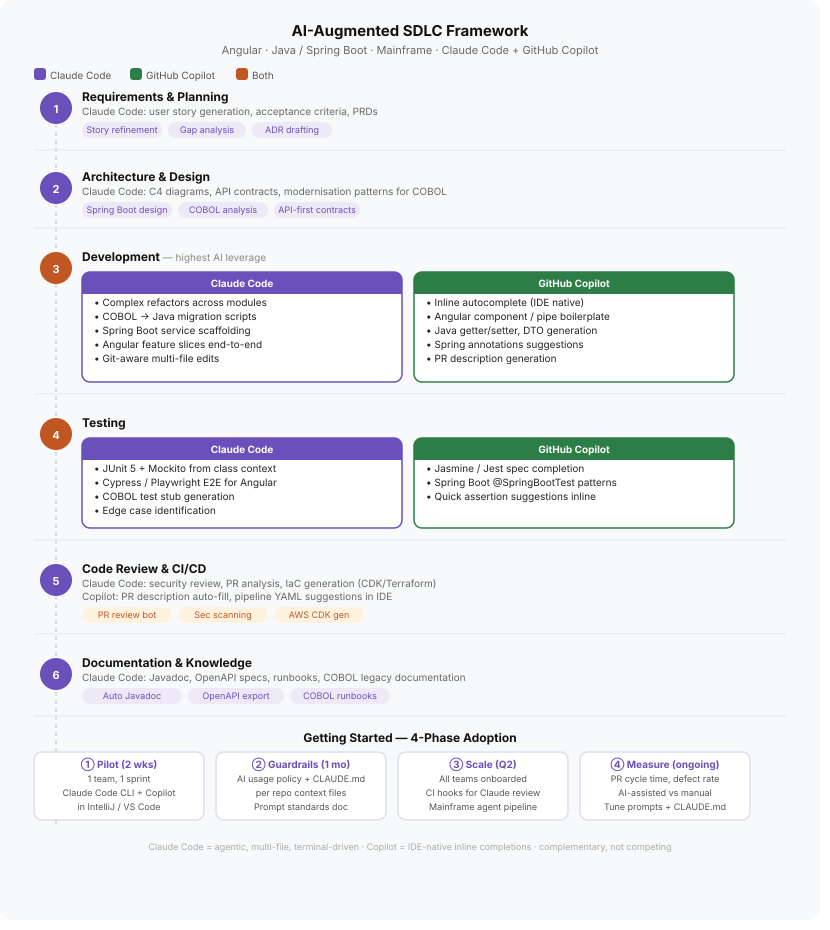
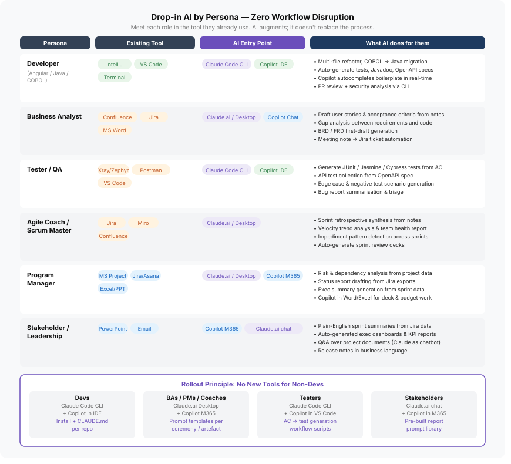

APEX routes the right AI capability to the right persona at every stage of delivery — without replacing a single tool, ceremony, or habit your team already has.

APEX's developer layer runs on eeik_bootstrap —
a Claude Code seed repository with 40+ specialist agents, slash commands, and coding standards
for your full stack. Drop it into any new project and get enterprise-grade AI configuration instantly.
When Claude Code opens a repo seeded with eeik_bootstrap, it knows your architecture, your forbidden patterns, your test strategy, and which specialist agent to invoke for each task. No prompting from scratch every session.

/prompts/ — no code needed.